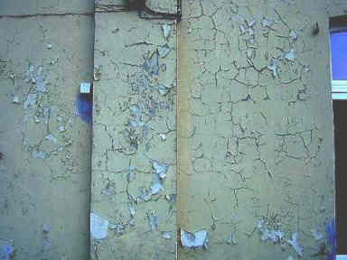
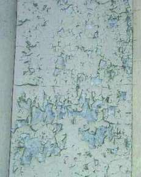
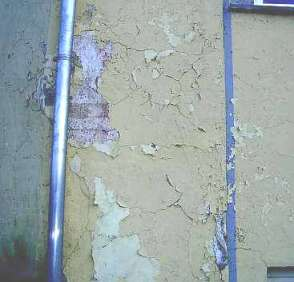
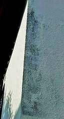
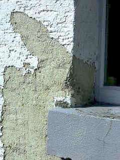
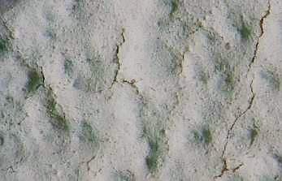

Altbautaugliche Verfahren und
Baustoffe
Altbautaugliche Verfahren und
BaustoffeBindemittelreiche Werktrockenmörtel mit geringen Korngrößen lassen sich zwar billig an die Fassade pumpen, im Abbindeprozeß werden sie aber schnell zu hart, ihre gestörte Karbonatisierung schreitet dann rißbildend über lange Zeiträume voran. Feuchte und kühle Umgebungsbedingungen sowie die Kapillarentfeuchtung blockierende Dispersionsanstriche begünstigen die dramatische Festigkeitsentwicklung von Werktrockenmörtel. Druckfestigkeitswerte vom 4-8-fachen ihrer im Merkblatt erwähnten Daten bzw. Mindestfestigkeit nach DIN sind keine Seltenheit! Für den üblicherweise niedrigfesten Untergrund, hierzu zählen auch die Porenziegel und sonstige Schaumbaustoffe, ist das zu viel. Putzrisse und -ablösungen, Steinrisse und abknackende Scherben sind die Folge.
Bei entsprechender Rißbildung analysiert man diesen Schaden am sichersten mit einer Beprobung eines aufgehackten Loches im Putz mit Phenolphthalein-Lösung. Regelmäßig ist nur die meist schon wegen Überfestigkeit durchrissene Oberflächenkruste durchkarbonatisiert und die darunterliegende Putzschicht noch nicht. Gleichwohl hat die von außen her fortschreitende Rißbildung die inneren Putzschichten schon durchrissen - ein Phänomen, das auch durch wiederkehrende "Rißsanierung" kaum gestoppt werden kann.
In so einem Fall heißt es also: Hydrauleputz runter, echter Luftkalkmörtel (fragen Sie nach den "sonstigen" hydraulisch wirkenden Bindemittelzugaben wie Hydraulkalk, Traßkalk mit undeklariertem Zement, Trockensilikat usw. und warum das dann Luftkalkmörtel sein soll) drauf.
Achtung: Nur auf weißgetrockneter, durch Schichttrocknung schwundrißbedingt ausgerissener (entspannter) 1. Putzlage, also je nach Trocknungsbedingungen bis zu ca. 7-10 Tagen, darf der Kalk-Oberputz aufgetragen werden, sonst reißt er im Zusammenhang mit der luftkalktypischen Schwundrißbildung der ersten Lage mit durch. Eine feine Schweißputzlage kann gerissene Luftkalkputze dann zwar problemlos "heilen", ein dennoch unnötiger Mehraufwand. Das Problem jahrelang zunehmender Erhärtung über die vom Untergrund aufnehmbaren Abbindekräfte hinaus kann es beim "weichen" Luftkalkmörtel aber nicht geben. Schon nach erstem Ansteifen und folgender Austrocknung erreicht er durch die trocknungsbedingte Adhäsion bis zu ca. 70 Prozent seiner Endfestigkeit, die sich erst nach längerer Zeitphase durch spannungsarme Karbonatisierung (CO2-bedingte Umwandlung der Kalkdihydroxide Ca(OH)2 in Kalksteinkarbonat CaCo3) entwickelt. Ein Nachreißen bzw. eine Spätrißbildung, wie sie bei allen zementären Mörteln droht, ist bei Luftkalkmörteln deswegen nicht zu erwarten. Weitere Info.
Ungeeignete Fassadenbeschichtungen aus der Hexenküche der Bauchemie (Kunstharzhaltige und hydrophobierte Anstriche) zerstören den Malgrund durch Blockade der Entfeuchtung und Entsalzung.

Sowas "wasserabweisend Vorteilhaftes" malen angesehene Malermeister
einer sehr nassen deutschen Großstadt ihren Kunden auf die historistische
Fassade. Zur künftigen Auftragsförderung und Vermehrung der Bauschäden?
Sind größere Handwerks- und Bauchemie-Sauereien überhaupt vorstellbar? Vielleicht war das der Lotuseffekt?

.


Das ist das stein- und fassadenzerrottende Ergebnis einer wasserabweisenden
und algizid vergifteten "Mineral"-farbbeschichtung nach drei Jahren.
Planer: Staatsbauamt, Ausführendes Unternehmen: Innungsbetrieb
Objekt: Regierungsgebäude, Verwaltungsnutzung
Steuergeld: Vernichtet
Zählt das dann auch zur Regierungskriminalität?

Kunstharzschwartenfarben auf Putz und Holz.
Bei der Abnahme sah das doch so dolle gut aus!



Weiter: Kapitel 3